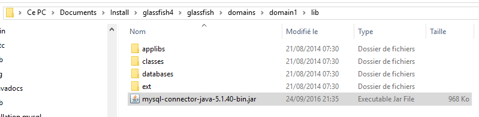
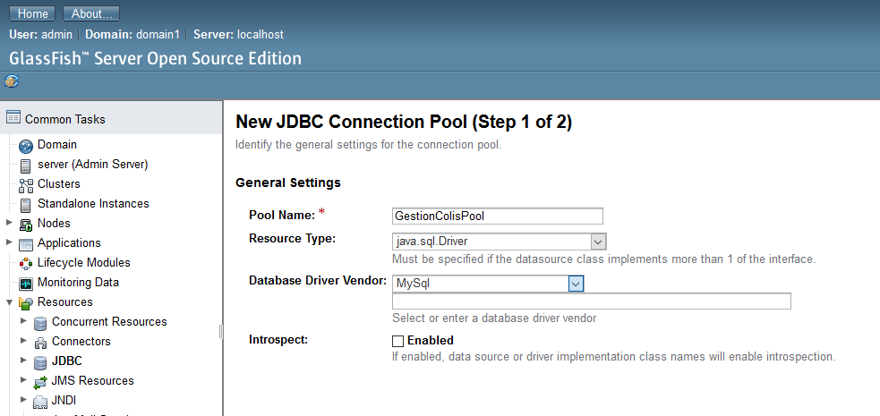
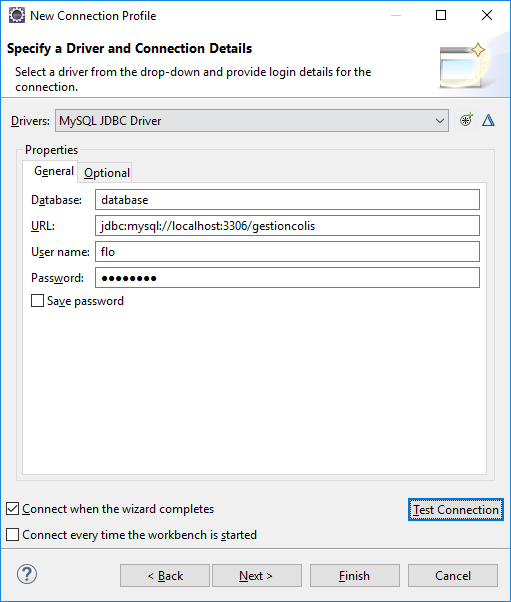

C:\Users\hb-asus\Documents\Install\glassfish4\glassfish\domains\domain1\lib


Créer un user dans la base de données avec un mot de passe.
Puis paramétrer la connexion dans eclipse :

Créé avec HelpNDoc Personal Edition: Éditeur de documentation Qt Help facile